Você recebeu uma mensagem de Aline Leal
April 12, 2018 06:50
Conteúdo sobre Divisão Celular
Definição
Ocorre quando uma célula se divide originando duas células idênticas à primeira. Consequentemente, a divisão celular aumenta o número de células, então podemos dizer, que há multiplicação celular durante esse processo.
Por que ocorre?
Nos seres vivos unicelulares, a divisão celular ocorre para sua reprodução. Já nos pluricelulares, é responsável pelo crescimento e reparo. O reparo constitui a reposição das células que morrem no decorrer da vida dos seres pluricelulares.
Quando ocorre?
Ocorre quando há um sinal reprodutivo, que pode ter origem dentro ou fora da célula ou do organismo. Ex: hormônios (dentre do organismo) ou disponibilidade de alimento (fora da célula).
Como ocorre?
Após o sinal reprodutivo, ocorre a duplicação do material genético (ácido desoxirribonucleico, o DNA) e de outros componentes vitais da célula para que as duas novas células contenham genes idênticos e funções celulares completas. Em seguida, há a segregação do DNA duplicado, ou seja, ele é distribuído de forma homogênea para as duas novas células. Por fim, acontece a citocinese, divisão do citoplasma, originando duas células independentes..
Fonte do texto: AMABIS, J. M.; MARTHO, G. R. Biologia em contexto. Volume 1: Do universo às células vivas. 1ª ed. São Paulo: Ed. Moderna, 2013. SADAVA, D.; HELLER, H. C.; ORIANS, G. H.; PURVES, W. K.; HILLIS, D. M. Vida: A Ciência da Biologia. Volume I: Célula e Hereditariedade. 8ª ed. Porto Alegre: Artmed, 2009.
Fonte da imagem: http://www.pmfias.com/mitosis-m-phase-interphase-cytokinesis-cell-cycle-cell-division/ (modificada e traduzida).
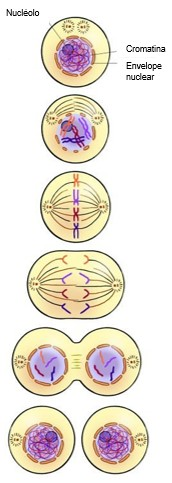
É um tipo de divisão celular responsável pela reprodução de seres procariontes unicelulares; como as bactérias, as cianobactérias e as arqueobactérias. Durante a fissão binária, a célula procarionte duplica seu cromossomo e divide-se ao meio, originando duas novas células idênticas entre si. Em algumas espécies, em condições ideais, o processo completo ocorre em apenas 20 minutos. É por isso que, em algumas horas, uma única bactéria pode originar uma população composta por milhares de células. O conjunto de seres procariontes originados de uma única célula por sucessivas divisões do tipo fissão binária é denominado de clone, uma vez que todos são geneticamente idênticos.
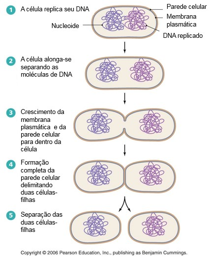
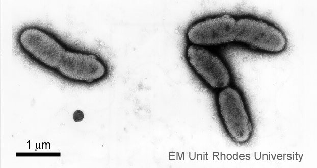
Fonte do texto: AMABIS, J. M.; MARTHO, G. R. Fundamentos da Biologia Moderna. 4ª ed. São Paulo: Ed. Moderna, 2006.
Fonte da imagem 1: https://socratic.org/questions/why-is-binary-fission-so-effective-for-bacteria (traduzida).
Fonte da imagem 2: https://www.ru.ac.za/emu/prokayoticcells-bacteria/ (traduzida).
Refere-se ao período entre o surgimento de uma célula por divisão até a própria célula dividir-se em duas. O ciclo celular compreende a intérfase e a divisão celular. A intérfase refere-se ao período em que a célula não está se dividindo, possuindo três subfases: G1, S e G2. Já a divisão celular compreende dois processos: a divisão do núcleo, denominada de mitose; e a divisão do citoplasma, que recebe o nome de citocinese. Na maior parte do tempo, a célula encontra-se em intérfase; sendo bem reduzido o tempo necessário para que a mitose e a citocinese ocorram, conforme imagem 1.
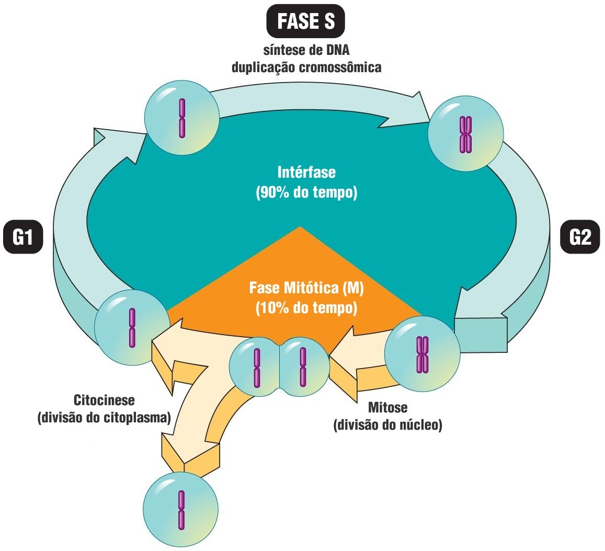
Fonte do texto: AMABIS, J. M.; MARTHO, G. R. Biologia em contexto. Volume 1: Do universo às células vivas. 1ª ed. São Paulo: Ed. Moderna, 2013.
Fonte da imagem 1: https://socratic.org/questions/why-is-binary-fission-so-effective-for-bacteria (traduzida).
Compreende o período em que a célula não está se dividindo, sendo o período mais longo do ciclo celular. Na intérfase, os cromossomos ocorrem como filamentos distendidos e espalhados pelo núcleo, não sendo vistos individualizados ao microscópio óptico.
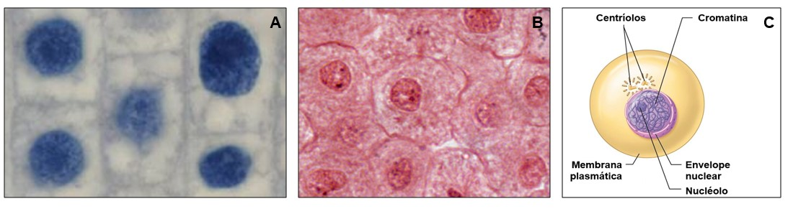
Fonte da imagem 1B: http://faculty.baruch.cuny.edu/jwahlert/bio1003/mitosis.html
Fonte da imagem 1C: http://slideplayer.com/slide/9201444/ (traduzida).
A intérfase é dividida em três subfases: G1, S e G2. A sigla S deriva da palavra inglesa synthesis, em referência a síntese de DNA, que ocorre durante a fase S. As siglas G1 e G2 derivam da palavra gap (intervalo) e designam os momentos anterior (G1) e posterior (G2) à duplicação do DNA.
Durante a intérfase, ocorre há intensa síntese de todos os constituintes celulares. Após receber o sinal para divisão, a célula dobra seu volume para possibilitar que duas novas células, aproximadamente, iguais no tamanho e na composição sejam originadas por mitose. Quase todos os constituintes celulares são produzidos continuamente na intérfase, ocorrendo intensa síntese de RNA (transcrição) e de proteínas (tradução), multiplicação de organelas (como mitocôndrias, cloroplastos, complexo de golgiense, retículo endoplasmático, peroxissomos etc.), aumento da membrana plasmática e do citoesqueleto. Porém, alguns eventos ocorrem em fases específicas como veremos a seguir.
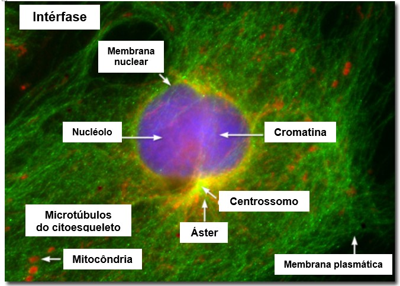
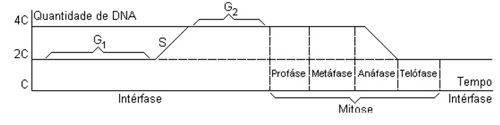
É o período com tempo de duração mais variável. Ocorrendo de 3 a 4 dias em muitas células eucarióticas, mas podem durar mais tempo chegando a meses e até anos, conforme as condições fisiológicas. Quando a célula permanece em intérfase por anos, a subfase G1 é denominada de G0. Nela a célula se encontra em repouso não exercendo, portanto, nenhuma atividade que a prepare para a divisão celular. Geralmente, células em G0 são muito diferenciadas, não se dividem mais e realizam funções como: secreção (células caliciformes), condução do impulso nervoso (neurônios), defesa do organismo (macrófagos), entre outras. Porém, existem muitas que voltam a se dividir, retornando a G1, se houver um estímulo, o que ocorre com os linfócitos na presença de um antígeno e com os hepatócitos se houver perda de tecido no fígado. Há ainda, células que possuem grande capacidade de divisão. É o caso das células da epiderme da pele, que estão constantemente sendo produzidas para repor as que são perdidas pelo processo natural de descamação, o que ocorre também com as células do epitélio intestinal.
Fonte do texto: AMABIS, J. M.; MARTHO, G. R. Biologia em contexto. Volume 1: Do universo às células vivas. 1ª ed. São Paulo: Ed. Moderna, 2013. LOPES, S.; ROSSO, S. Bio: volume I, Ensino Médio. 1 ed. São Paulo: Editora Saraiva, 2010. RECCO-PIMENTEL, S. M.; VEIGA-MENONCELLO, A. C. P.; JUNIOR, O. A. Mitose. In: CARVALHO, H. F.; RECCO-PIMENTEL, S. M (Eds.). A célula. 3ª ed. Barueri: Manole, 2013. p. 501-518. SADAVA, D.; HELLER, H. C.; ORIANS, G. H.; PURVES, W. K.; HILLIS, D. M. Vida: A Ciência da Biologia. Volume I: Célula e Hereditariedade. 8ª ed. Porto Alegre: Artmed, 2009. http://www.lb.ufs.br/lcb/index.php/divisao-celular
No inicio dessa fase ou no final da fase G1, ocorre a duplicação do centrossomo (centro organizador dos microtúbulos do citoesqueleto, formado por um par de centríolos nas células animais), o que garantirá, posteriormente, a formação das fibras do fuso e distribuição dos cromossomos entre as células-filhas. Em alguns organismos ou células, a organização do fuso independe dos centrossomos, é o que ocorre com os fungos e na maioria das plantas. Apesar de não haver centríolos, o fuso da divisão celular é formado, pois as células eucarióticas possuem a proteína tubulina, necessária para a formação dos microtúbulos. Na intérfase, notam-se microtúbulos longos, denominados de áster, irradiando dos centrossomos para todas as direções. S: Nesta subfase, ocorre a duplicação (replicação) do DNA para que todas as células-filhas possam receber uma cópia exata de cada molécula de DNA da célula-mãe. Este período tem duração entre 7 e 8h.
Nesta subfase, ocorre a duplicação (replicação) do DNA para que todas as células-filhas possam receber uma cópia exata de cada molécula de DNA da célula-mãe. Este período tem duração entre 7 e 8h.
Fonte do texto: AMABIS, J. M.; MARTHO, G. R. Biologia em contexto. Volume 1: Do universo às células vivas. 1ª ed. São Paulo: Ed. Moderna, 2013. LOPES, S.; ROSSO, S. Bio: volume I, Ensino Médio. 1 ed. São Paulo: Editora Saraiva, 2010. RECCO-PIMENTEL, S. M.; VEIGA-MENONCELLO, A. C. P.; JUNIOR, O. A. Mitose. In: CARVALHO, H. F.; RECCO-PIMENTEL, S. M (Eds.). A célula. 3ª ed. Barueri: Manole, 2013. p. 501-518. SADAVA, D.; HELLER, H. C.; ORIANS, G. H.; PURVES, W. K.; HILLIS, D. M. Vida: A Ciência da Biologia. Volume I: Célula e Hereditariedade. 8ª ed. Porto Alegre: Artmed, 2009. http://www.lb.ufs.br/lcb/index.php/divisao-celular
Período em que a célula verifica se todo o DNA foi duplicado corretamente e se houve aumento adequado de volume, antes de iniciar a divisão propriamente dita. Tem duração entre 2 a 5h.
Fonte do texto: AMABIS, J. M.; MARTHO, G. R. Biologia em contexto. Volume 1: Do universo às células vivas. 1ª ed. São Paulo: Ed. Moderna, 2013. LOPES, S.; ROSSO, S. Bio: volume I, Ensino Médio. 1 ed. São Paulo: Editora Saraiva, 2010. RECCO-PIMENTEL, S. M.; VEIGA-MENONCELLO, A. C. P.; JUNIOR, O. A. Mitose. In: CARVALHO, H. F.; RECCO-PIMENTEL, S. M (Eds.). A célula. 3ª ed. Barueri: Manole, 2013. p. 501-518. SADAVA, D.; HELLER, H. C.; ORIANS, G. H.; PURVES, W. K.; HILLIS, D. M. Vida: A Ciência da Biologia. Volume I: Célula e Hereditariedade. 8ª ed. Porto Alegre: Artmed, 2009. http://www.lb.ufs.br/lcb/index.php/divisao-celular
Fonte do texto: AMABIS, J. M.; MARTHO, G. R. Biologia em contexto. Volume 1: Do universo às células vivas. 1ª ed. São Paulo: Ed. Moderna, 2013. LOPES, S.; ROSSO, S. Bio: volume I, Ensino Médio. 1 ed. São Paulo: Editora Saraiva, 2010. RECCO-PIMENTEL, S. M.; VEIGA-MENONCELLO, A. C. P.; JUNIOR, O. A. Mitose. In: CARVALHO, H. F.; RECCO-PIMENTEL, S. M (Eds.). A célula. 3ª ed. Barueri: Manole, 2013. p. 501-518. SADAVA, D.; HELLER, H. C.; ORIANS, G. H.; PURVES, W. K.; HILLIS, D. M. Vida: A Ciência da Biologia. Volume I: Célula e Hereditariedade. 8ª ed. Porto Alegre: Artmed, 2009. http://www.lb.ufs.br/lcb/index.php/divisao-celular
Fonte do Gráfico 1: https://www.educabras.com/ensino_medio/materia/biologia/genetica_molecular/aulas/mitose_fases_da_mitose
Fonte da Imagem 2: https://micro.magnet.fsu.edu/cells/fluorescencemitosis/interphaselarge.html (traduzida).
O termo mitose deriva da palavra grega mitos, que significa “filamento”, referindo-se ao fato de os cromossomos se tornarem cada vez mais espessos durante o processo. Em células humanas, a mitose costuma durar de 30 a 60 minutos, desde o início da condensação cromossômica até a formação dos dois núcleos-filhos. Ao longo da mitose, ocorrem eventos marcantes, escolhidos pelos cientistas para dividir esse processo em quatro fases: prófase, metáfase, anáfase e telófase. Sendo que, alguns autores consideram que há uma fase intermediária entre a prófase e a metáfase, chamada de prometáfase.
Caracteriza-se pela condensação dos cromossomos, que se tornam mais curtos e grossos, podendo se visualizados individualmente ao microscópio óptico. Ao se condensar, os cromossomos encurtam-se, podendo ser separados mais facilmente entre as células-filhas. O cromossomo condensado torna-se inativo, pois a compactação impede a produção de moléculas de RNA pelo DNA. Esse fato explica por que os nucléolos desaparecem durante a prófase, pois cessa a produção de RNAr. Ocorre a formação do fuso mitótico ou fuso acromático, que é um conjunto de microtúbulos orientados de um polo a outro da célula e cuja função é capturar e distribuir os cromossomos para as células-filhas. A formação do fuso mitótico inicia-se com a separação dos centrossomos para os polos opostos da célula. Ao final da prófase, a carioteca se fragmenta em pequenas vesículas e os cromossomos, em grau avançado de condensação, espalham-se pelo citoplasma.
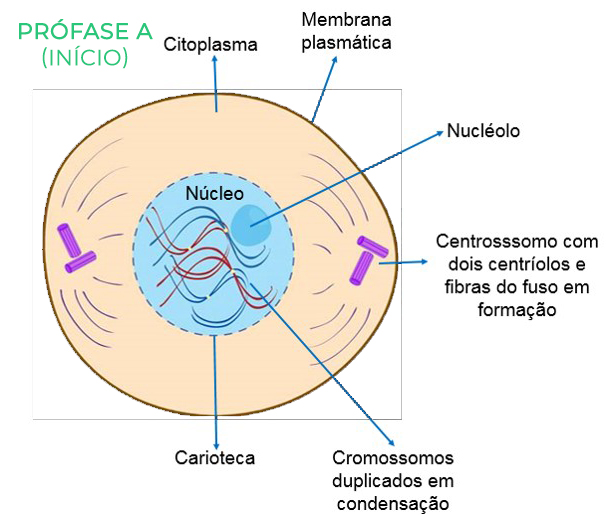
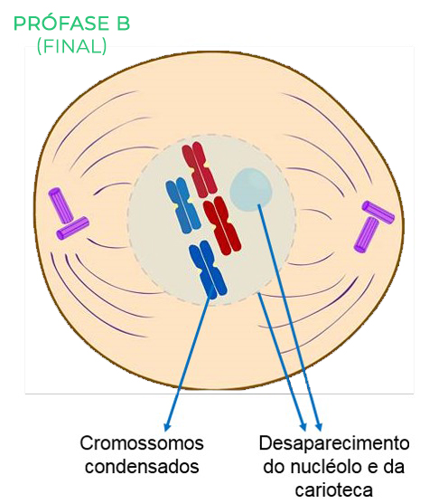
Alguns autores chamam de prometáfase o período que começa com o rompimento da carioteca e termina com a chegada dos cromossomos na região mediana da célula. Neste caso, a metáfase corresponderia ao período que vai do alinhamento dos cromossomos no equador da célula até o início de sua migração para polos opostos.
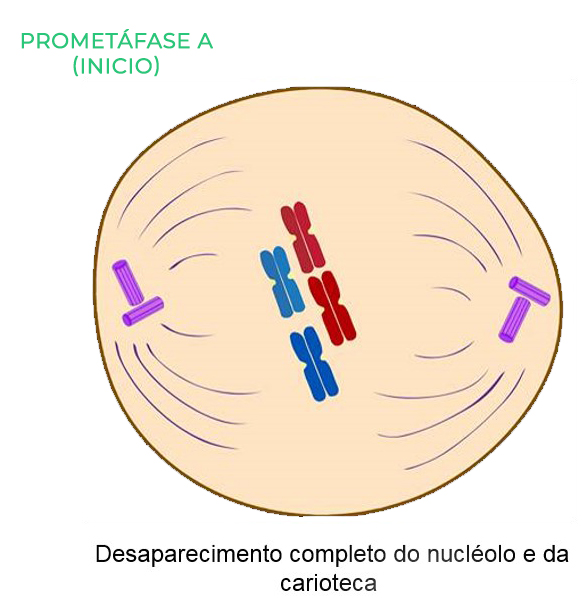

É marcada pelo posicionamento dos cromossomos na região equatorial do fuso mitótico. Para que isso ocorra, microtúbulos provenientes dos centrossomos crescem e se ligam aos cromossomos, capturando-os pelo cinetócoro, estrutura proteica presente na região do centrômero. O cinetócoro de cada cromátide-irmã é capturado por microtúbulos ligados a polos opostos, os quais formam as fibras do fuso mitótico. Os cromossomos presos às fibras do fuso posicionam-se na região mediana da célula, constituindo a chamada placa metafásica ou placa equatorial. A metáfase constitui o melhor momento para ver os tamanhos e as formas dos cromossomos, pois estes estão condensados ao máximo.
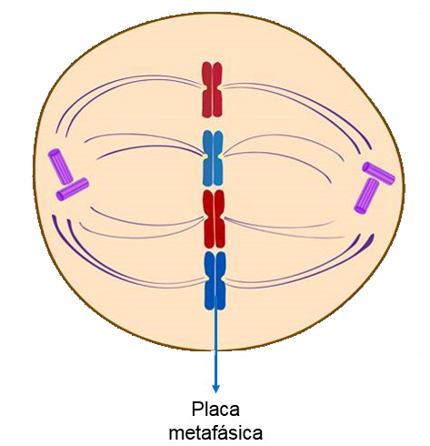
Começa com a separação dos centrômeros pela quebra das proteínas coesinas, o que permite a separação completa das duas cromátides-irmãs de cada cromossomo. Posteriormente, as cromátides-irmãs são puxadas para polos opostos pelo encurtamento dos microtúbulos do fuso mitótico, uma vez que ocorre a desagregação controlada de unidades de tubulina junto à região dos cinetócoros. Assim, cada cromátide-irmã é progressivamente arrastada pelo centrômero em direção ao polo ao qual está ligada. Quando as cromátides-irmãs, agora chamadas de cromossomos-irmãos, chegam aos polos da célula, termina a anáfase.
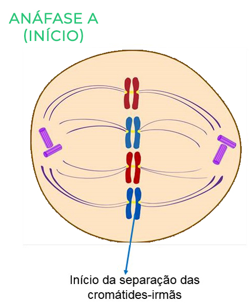
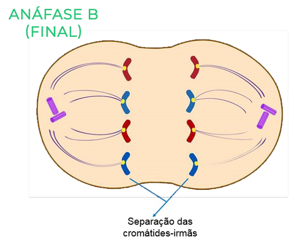
Quando os cromossomos param de se mover e já estão posicionados nos polos celulares começa a tefófase, a última fase da mitose. Os cromossomos se descondensam e novas cariotecas reorganizam-se ao redor de cada conjunto cromossômico separado, reconstituindo dois novos núcleos. Com a descondensação, os cromossomos voltam progressivamente à atividade e retomam a produção de RNA ribossômico; consequentemente, os nucléolos reaparecem. Ao final da telófase, os dois núcleos-filhos apresentam o mesmo aspecto do núcleo interfásico e fica também concluída a divisão do núcleo ou cariocinese. A mitose origina dois núcleos-filhos com mesmo número e tipos iguais de cromossomos da célula-mãe. Assim, células diploides (2n) originam, por mitose, duas células diploides e células haploides (n) geram duas células haploides.
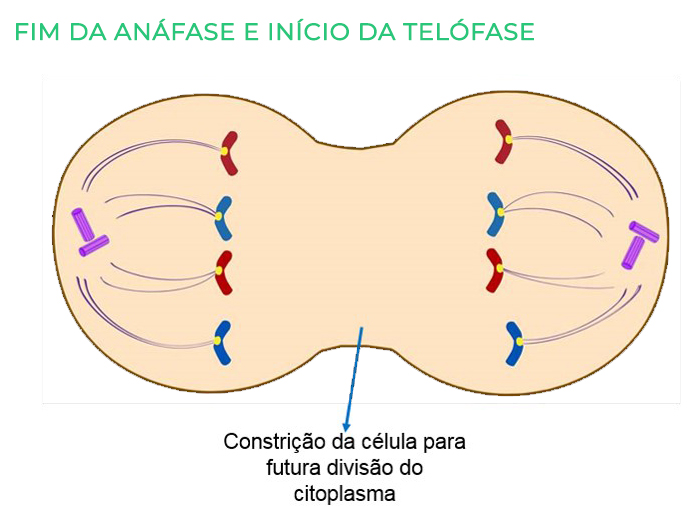
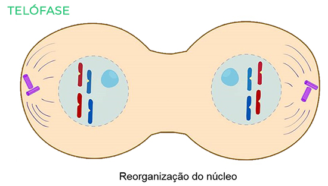
Fonte do texto: AMABIS, J. M.; MARTHO, G. R. Biologia em contexto. Volume 1: Do universo às células vivas. 1ª ed. São Paulo: Ed. Moderna, 2013. LOPES, S.; ROSSO, S. Bio: volume I, Ensino Médio. 1 ed. São Paulo: Editora Saraiva, 2010. RECCO-PIMENTEL, S. M.; VEIGA-MENONCELLO, A. C. P.; JUNIOR, O. A. Mitose. In: CARVALHO, H. F.; RECCO-PIMENTEL, S. M (Eds.). A célula. 3ª ed. Barueri: Manole, 2013. p. 501-518. SADAVA, D.; HELLER, H. C.; ORIANS, G. H.; PURVES, W. K.; HILLIS, D. M. Vida: A Ciência da Biologia. Volume I: Célula e Hereditariedade. 8ª ed. Porto Alegre: Artmed, 2009. http://www.lb.ufs.br/lcb/index.php/divisao-celular
A citocinese compreende a divisão do citoplasma que leva à formação de duas células-filhas. Em diferentes organismos, a citocinese pode ser realizada de diferentes maneiras. No caso das células animais e de protozoários, a citocinese ocorre por um estrangulamento na região equatorial da célula, causado por um anel de filamentos contráteis constituído pelas proteínas actina e miosina. Por se iniciar na periferia da célula e avançar para o centro, esse tipo de divisão citoplasmática é chamado de citocinese centrípeta.
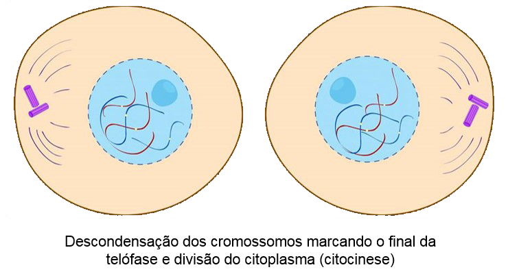
Fonte do texto:AMABIS, J. M.; MARTHO, G. R. Biologia em contexto. Volume 1: Do universo às células vivas. 1ª ed. São Paulo: Ed. Moderna, 2013. LOPES, S.; ROSSO, S. Bio: volume I, Ensino Médio. 1 ed. São Paulo: Editora Saraiva, 2010. SADAVA, D.; HELLER, H. C.; ORIANS, G. H.; PURVES, W. K.; HILLIS, D. M. Vida: A Ciência da Biologia. Volume I: Célula e Hereditariedade. 8ª ed. Porto Alegre: Artmed, 2009.
A mitose é o processo pelo qual os cromossomos, previamente replicados na intérfase, são alinhados, separados e distribuídos ordenadamente nas células-filhas. Existem semelhanças e diferenças no processo de mitose, quando esse ocorre em células eucariontes animais ou em células eucariontes vegetais, devido às diferenças estruturais que ocorrem nesses dois tipos de células. Entretanto, a mitose na célula eucarionte vegetal também é dividida em quatro fases: prófase, metáfase, anáfase e telófase. Podendo haver a prometáfase entre a prófase e metáfase dependendo do autor.
Antes de iniciar a prófase, os microtúbulos presentes no citoplasma da célula despolimerizam, disponibilizando subunidades de tubulina. As subunidades de tubulina se repolimerizam formando a banda pré-profase, a qual orienta as fibras do fuso. Enquanto os cinetócoros atuam como centros de organização dos microtúbulos. Durante a prófase, os microtúbulos iniciam sua montagem, em dois polos nos dois lados opostos do núcleo, formando as fibras do fuso mitótico. Ocorre a condensação dos cromossomos e o desparecimento da carioteca e do nucléolo.
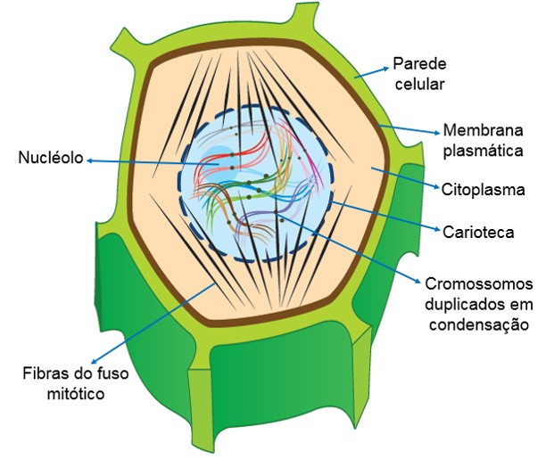
Observação:
A orientação das fibras do fuso mitótico difere entre as células eucariontes animais e as células eucariontes vegetais. Nas células animais, os microtúbulos partem dos dois polos, onde estão localizados os centrossomos, e encontram-se aproximadamente no meio da célula (Imagem 1). Nas células vegetais, os microtúbulos partem dos polos opostos ao núcleo e têm uma diposição quase paralela (Imagem 1).
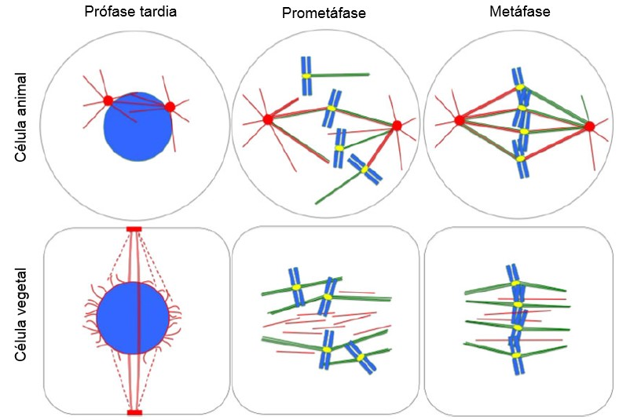
Alguns autores chamam de prometáfase o período que começa com o rompimento da carioteca e termina com a chegada dos cromossomos na região mediana da célula. Neste caso, a metáfase corresponderia ao período que vai do alinhamento dos cromossomos no equador da célula até o início de sua migração para polos opostos.

Os cromossomos presos às fibras do fuso posicionam-se na região mediana da célula, constituindo a chamada placa metafásica ou placa equatorial. A metáfase constitui o melhor momento para ver os tamanhos e as formas dos cromossomos, pois estes estão condensados ao máximo.

Ocorre o encurtamento dos microtúbulos ligados aos cinetócoros dos cromossomos, consequentemente, as cromátides-irmãs são puxadas para os polos opostos da célula.
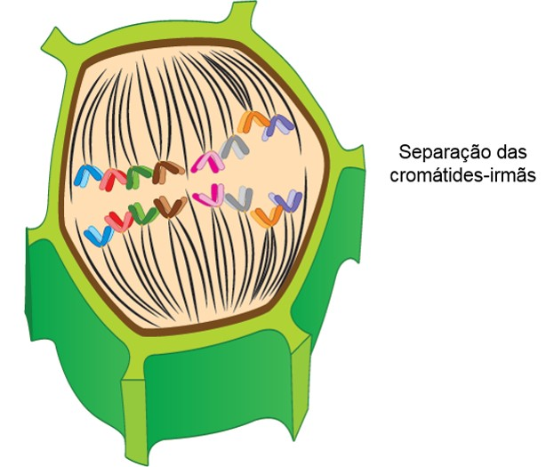
Os cromossomos se descondensam. Ocorre a reorganização do envoltório nuclear e crescimento da placa celular, percursora da nova parede celular entre as duas células-filhas.
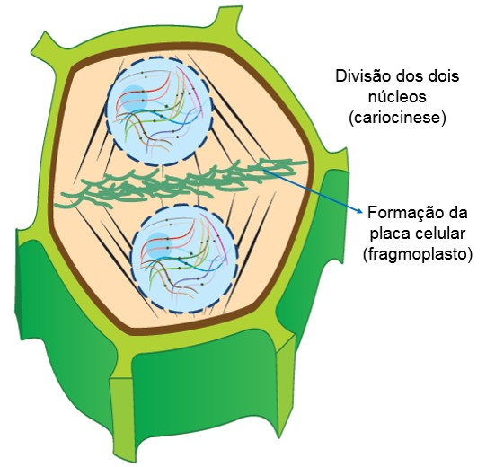
Fonte do texto: AMABIS, J. M.; MARTHO, G. R. Biologia em contexto. Volume 1: Do universo às células vivas. 1ª ed. São Paulo: Ed. Moderna, 2013. SADAVA, D.; HELLER, H. C.; ORIANS, G. H.; PURVES, W. K.; HILLIS, D. M. Vida: A Ciência da Biologia. Volume I: Célula e Hereditariedade. 8ª ed. Porto Alegre: Artmed, 2009.
A divisão do citoplasma em células vegetais difere das células animais, porque as plantas possuem parede celular. Em células vegetais, à medida que o fuso se degrada no final da mitose, vesículas membranosas derivadas do complexo golgiense surgem na placa equatorial entre os dois novos núcleos. Essas vesículas movem-se através dos microtúbulos e se fundem para formarem a nova membrana plasmática, elas também contribuem com conteúdo para a produção da placa celular, dando início à nova parede celular. Em seguida, ocorre a deposição de celulose e a nova parede celular separa as duas células-filhas.
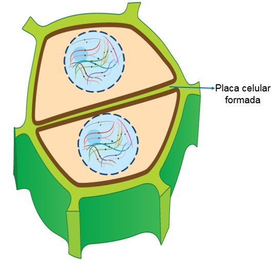
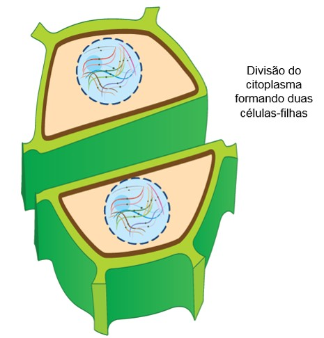
Fonte do texto:AMABIS, J. M.; MARTHO, G. R. Biologia em contexto. Volume 1: Do universo às células vivas. 1ª ed. São Paulo: Ed. Moderna, 2013. LOPES, S.; ROSSO, S. Bio: volume I, Ensino Médio. 1 ed. São Paulo: Editora Saraiva, 2010. SADAVA, D.; HELLER, H. C.; ORIANS, G. H.; PURVES, W. K.; HILLIS, D. M. Vida: A Ciência da Biologia. Volume I: Célula e Hereditariedade. 8ª ed. Porto Alegre: Artmed, 2009.
A palavra apoptose tem origem grega e significa decadência, refere-se a uma série de eventos geneticamente programados que resultam na morte celular. Da mesma forma que o ciclo celular, a apoptose é controlada por sinais que vêm de dentro ou de fora da célula. Essa morte programada das células tem o papel de garantir o bom funcionamento do organismo. Porém, certas alterações genéticas podem modificar esse processo, levando a célula a crescer e se multiplicar sem necessidade. Caso essa tendência de multiplicação incontrolada seja transmitida às células-filhas, surgirá um clone de células com propensão a se expandir indefinidamente, originando um tumor. Um tumor pode ser constituído por células sem mobilidade, que ficam restritas ao local onde surgiram. Neste caso, geralmente causa poucos problemas ao organismo e por isso é denominado de tumor benigno. Por outro lado, alguns tipos de tumor têm células csapazes de migrar e invadir tecidos vizinhos sadios, sendo chamados de tumores malignos ou cânceres. Pelas circulações sanguínea e linfática, as células cancerígenas atingem diversas regiões do corpo, onde podem originar novos tumores. O processo de disseminação de um tumor é denominado metástase. Tumores malignos geralmente são prejudiciais ao organismo e, se não são tratados adequadamente, podem levar à morte.
Mais informações sobre câncer na página do Instituto Nacional de Câncer José Alencar Gomes da Silva (INCA): http://www2.inca.gov.br/wps/wcm/connect/inca/portal/home.
Fonte do texto:AMABIS, J. M.; MARTHO, G. R. Biologia em contexto. Volume 1: Do universo às células vivas. 1ª ed. São Paulo: Ed. Moderna, 2013. SADAVA, D.; HELLER, H. C.; ORIANS, G. H.; PURVES, W. K.; HILLIS, D. M. Vida: A Ciência da Biologia. Volume I: Célula e Hereditariedade. 8ª ed. Porto Alegre: Artmed, 2009.